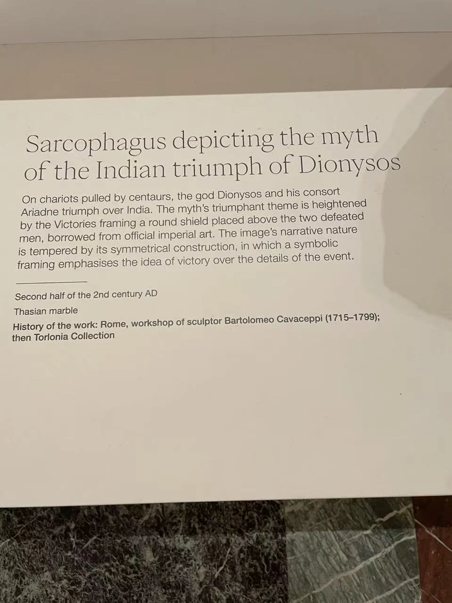

ROMAN SARCOPHAGI / R03
狄俄尼索斯印度凯旋石棺
酒神的凯旋被组织成近乎对称的图像，中心却留给了胜利的标志。

- 年代
- 2世纪后半叶
- 材料
- 塔索斯大理石
- 收藏
- Fondazione Torlonia／托洛尼亚收藏
- 观看地点
- 卢浮宫 · 巴黎
- 馆藏号
- MT 416
两辆车围住一个圆章
中央两位有翼胜利女神举起带戈尔贡头像的盾形圆章，两侧的车辆和随从向它靠拢。收藏方将左车主角识为狄俄尼索斯，右车女性则可能是塞墨勒或阿里阿德涅。照片里，圆章与伸展的翅膀先建立秩序，密集的肢体和动物才在两旁展开。 [3]
神话与胜利的形式
与休斯顿前板上舒展的斜倚酒神相比，这里更强调成对的车辆和中央徽记。收藏方将这种布局联系到罗马胜利图像的惯例，并把石棺归入2世纪后半叶的类型。作品曾在雕刻家卡瓦切皮的收藏中；此前的流传尚缺可靠记录。 [3]
现场展签 · 1张
